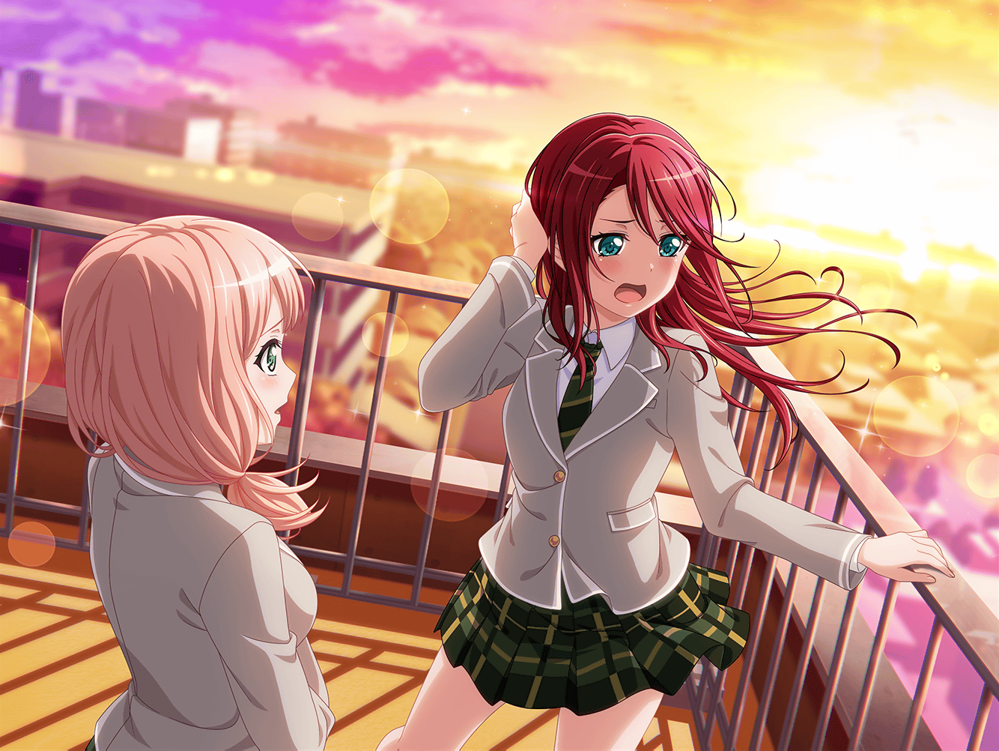

羽丘女子学園 1-A教室
蘭
……
蘭
（『話があります。屋上にきてください』）
蘭
（……ダメだ。全然いい言葉が浮かばない。どうしよう）
蘭
はあ……この時間だって、無駄なくらいなのに……

羽丘女子学園 校門前
ひまり
巴、帰ろ〜
巴
モカとつぐは？
ひまり
……わかんない。つぐは生徒会かな？
巴
蘭は？
ひまり
……わかんない
巴
わかんない。そうだよな、アタシもわかんないよ
ひまり
何度も歌詞、読み返してるんだ。
でも、やっぱり前みたいにうまく蘭の歌詞を読み解けないの
ひまり
わかんない、どうしようって気持ちばっかり先に
出ちゃって、焦っちゃって。テンパって……
ひまり
巴、どうしよう？ このまま蘭のこと、全然わからなく
なっちゃって、バンドも……バラバラになっちゃったら……
ひまり
私があんなこと言わなければよかったのに……
巴
……ひまり……
巴
屋上、行かないか？
ひまり
え……？
巴
夕焼け、きれいだから

羽丘女子学園 屋上
巴
やっぱり、ここから見る夕焼けってイチバンいいよな〜
ひまり
うん。そうだよね
巴
……なあ
巴
アタシ達っていったら、やっぱり夕焼けだよな？
ひまり
う、うん……
巴
そうだよな？
ひまり
巴……？
巴
バンドを組んでから……いや、組む前からかもな。
みんなでたくさん夕焼けを見てきただろ。
そのどれもが大切でさ
巴
色んな事、みんなで経験していくうちに、
夜空の良さにだって気づけた。夕焼けじゃない空だ。
……けど、アタシはここから見る夕焼けが一番好きなんだ
巴
……蘭、今も夕焼けが好きかな？
ひまり
な、なに言ってるの？ そんなの……
巴
これ、見て
ひまり
これ……井ノ島に行った時、蘭が撮った夕焼けの写真？
夕焼けなのに、モノクロで撮っちゃったやつだよね
巴
そう。チャットのアルバム見返してたら、これがでてきてさ。
蘭が唯一あげた写真。
……蘭には夕焼け、こんな風に見えてるのかな？
ひまり
えっ……

巴
怖いんだ、アタシ……
巴
今のアタシたちは、同じ空が見れてるのかって。
蘭も、みんなも、夕焼けが好きなのかって……
巴
このまま何もかも変わっちゃったら、って
ひまり
と、巴！ やめてよそんなこと言うの！
変わらないよ、きっと！
巴
でもさ！ こんな……こんなに
ずっと一緒にいた幼馴染のことがわからなくなるなんて、
どうしたらいいんだよ！？
巴
こんな風に変わっていくことなんて……
アタシには無理だよ。怖いよ
ひまり
だったら！ 変わらなければいいじゃんっ！
巴
ひまり……？
ひまり
巴が変わりたくないならそうすればいいの！
ひまり
あこちゃんのカッコイイでいたいって決めたときと同じだよ。
巴が変わらず、ずっと夕焼けを好きでいればいいの
ひまり
それに……変わることってこういうことじゃないと思う
巴
こういうことって？
ひまり
思ってもないほうに、無理やり変わることないってこと！
蘭は変わらないために変わったって、言ってたでしょ？
ひまり
えっとだから……つ、つまりそういうことっていうか……
巴
ぷっ……あははっ！
ひまり
わ、笑わないでよー！
巴
ごめんごめん！ ひまり、ありがと！
そうだよな、大切なものは変えちゃいけないよな
巴
みんなで一緒にいたいからこそ、変えちゃいけない。
うん……そうだ
ひまり
ね、巴！ 今からみんなに屋上に来てもらおうよ！
巴
い、今から！？
ひまり
だって、こんなきれいな夕焼けなんだよ？
これを見られないなんて一大事だよ！
巴
い、いや……蘭だって華道の集まりで忙しいみたいだし……
ひまり
もぉ〜！！ いいから早くみんなに連絡して！
巴が言わなきゃ意味ないの〜！！
巴
わ、わかったよ！！ それじゃあ……
巴
『緊急事態！ みんな、屋上に来てくれ！』